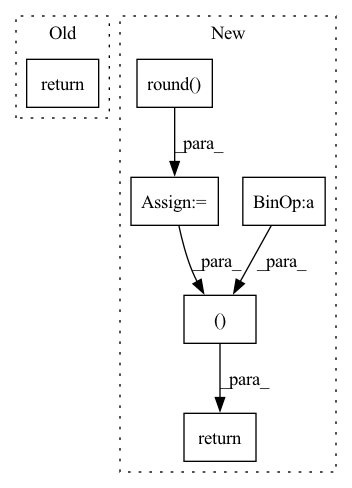

Pattern ID :34612
Before Change
plot_mc_curve(px, r, Path(save_dir) / "R_curve.png", names, ylabel="Recall")
i = f1.mean(0).argmax() // max F1 index
return p[:, i], r[:, i], ap, f1[:, i], unique_classes.astype("int32")
def compute_ap(recall, precision):After Change
i = f1.mean(0).argmax() // max F1 index
p, r, f1 = p[:, i], r[:, i], f1[:, i]
tp = (r * nt).round() // true positives
fp = (tp / (p + eps) - tp).round() // false positives
return tp, fp, p, r, f1, ap, unique_classes.astype("int32")
def compute_ap(recall, precision):
Compute the average precision, given the recall and precision curvesIn pattern: SUPERPATTERN
Frequency: 3
Non-data size: 6
Instances Fragment ID: 99431372
Project Name: ultralytics/yolov5
Commit Name: 36d12a500eae4561d09d4955e1b50b12e57bf6c6
Time: 2021-11-19
Author: glenn.jocher@ultralytics.com
File Name: utils/metrics.py
M Class Name: AnonimousClass
N Class Name: AnonimousClass
M Method Name: ap_per_class(8)
N Method Name: ap_per_class(7)
M Parent Class:
N Parent Class:
M File Name: utils/metrics.py
N File Name: utils/metrics.py
M Start Line: 40
M End Line: 83
N Start Line: 21
N End Line: 86
Before Change
plot_mc_curve(px, r, Path(save_dir) / "R_curve.png", names, ylabel="Recall")
i = f1.mean(0).argmax() // max F1 index
return p[:, i], r[:, i], ap, f1[:, i], unique_classes.astype("int32")
def compute_ap(recall, precision):After Change
i = f1.mean(0).argmax() // max F1 index
p, r, f1 = p[:, i], r[:, i], f1[:, i]
tp = (r * nt).round() // true positives
fp = (tp / (p + eps) - tp).round() // false positives
return tp, fp, p, r, f1, ap, unique_classes.astype("int32")
def compute_ap(recall, precision):
Compute the average precision, given the recall and precision curves Fragment ID: 99431358
Project Name: fcakyon/yolov5-pip
Commit Name: b0bac9868253d1bab90a3dca736e074e16c70602
Time: 2022-04-08
Author: 34196005+fcakyon@users.noreply.github.com
File Name: yolov5/utils/metrics.py
M Class Name: AnonimousClass
N Class Name: AnonimousClass
M Method Name: ap_per_class(8)
N Method Name: ap_per_class(7)
M Parent Class:
N Parent Class:
M File Name: yolov5/utils/metrics.py
N File Name: yolov5/utils/metrics.py
M Start Line: 40
M End Line: 83
N Start Line: 21
N End Line: 86
Before Change
This method chooses either self.__v0__ or self.__v1__
// return self.__v0__(x)
return self.__v1__(x)
def __v1__(self, x):
Push images(s) through the encoder+decoder, returns nbitslist (list of number of bits) and encoded+decoded imagesAfter Change
// print("x_hat is>", x_hat.shape)
// num_pixels = x.shape[2] * x.shape[3]
// print("num_pixels", num_pixels)
nbits = 8 * total_strings // BITS not BYTES
nbitslist = [nbits]
x_hat = (
torch.round( out_dec["x_hat"].clamp(0, 1) * 255.0) / 255.0
) // (batch, 3, H, W) // reconstructed image
if self.compute_metrics:
self.latest_psnr = self.compute_psnr(x, x_hat)
self.latest_msssim = self.compute_msssim(x, x_hat)
return nbitslist, x_hat
def getMetrics(self):
return self.latest_psnr, self.latest_msssim Fragment ID: 99431368
Project Name: interdigitalinc/compressai-vision
Commit Name: 68066c48f2581a19818170f5409496ae25f1aed7
Time: 2022-10-18
Author: sampsa.riikonen@iki.fi
File Name: compressai_vision/evaluation/pipeline/compressai.py
M Class Name: CompressAIEncoderDecoder
N Class Name: CompressAIEncoderDecoder
M Method Name: __call__(2)
N Method Name: __call__(2)
M Parent Class: EncoderDecoder
N Parent Class: EncoderDecoder
M File Name: compressai_vision/evaluation/pipeline/compressai.py
N File Name: compressai_vision/evaluation/pipeline/compressai.py
M Start Line: 125
M End Line: 125
N Start Line: 131
N End Line: 155